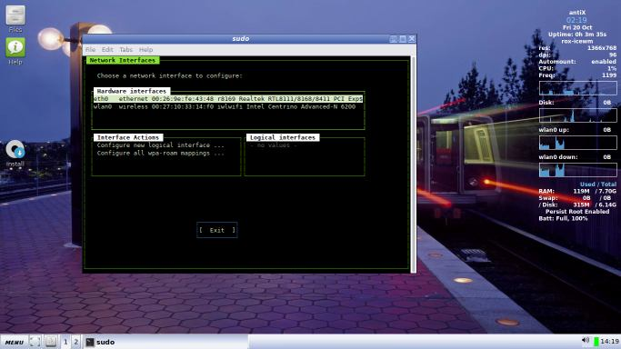
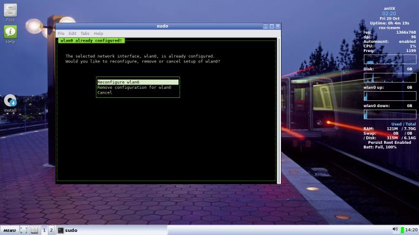
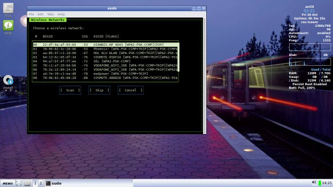
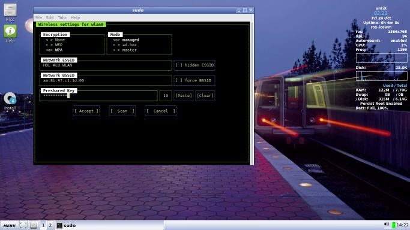
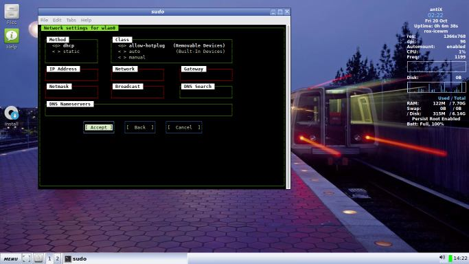
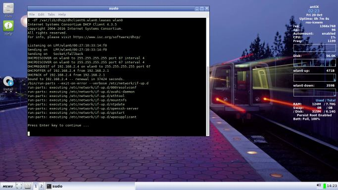
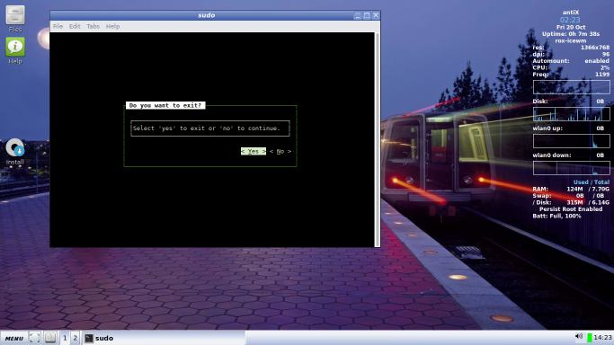

Connect to the Internet
antiX should automatically connect you to the Internet if you are using a wired (ethernet) connection. For wireless, you will have to configure your network connection. antiX provides 2 tools for this; ceni and wicd. antiX devs recommend ceni because it uses a lot less RAM.
Ceni
Ceni is the default network manager used on antiX. It is a CLI application, which allows users to configure /etc/network/interfaces through a command-line interface. It supports wired and wireless connections.
The screenshots below show the procedure for a WPA wireless set up.
      
Wicd
antiX also ships with wicd on antiX-full and antiX-base. Default boot from live media has wicd DISABLED! If you prefer it over ceni, then you MUST enable it at the live boot menu by pressing F4 > wicd.
Wicd is probably the better choice if you use wireless on the go on a laptop eg from various cafes, hotels etc.
Dialup
Some may wonder why we still include this option. It is because so many parts of the world only have dialup. antiX ships with gnome-ppp as it is light and simple to configure.